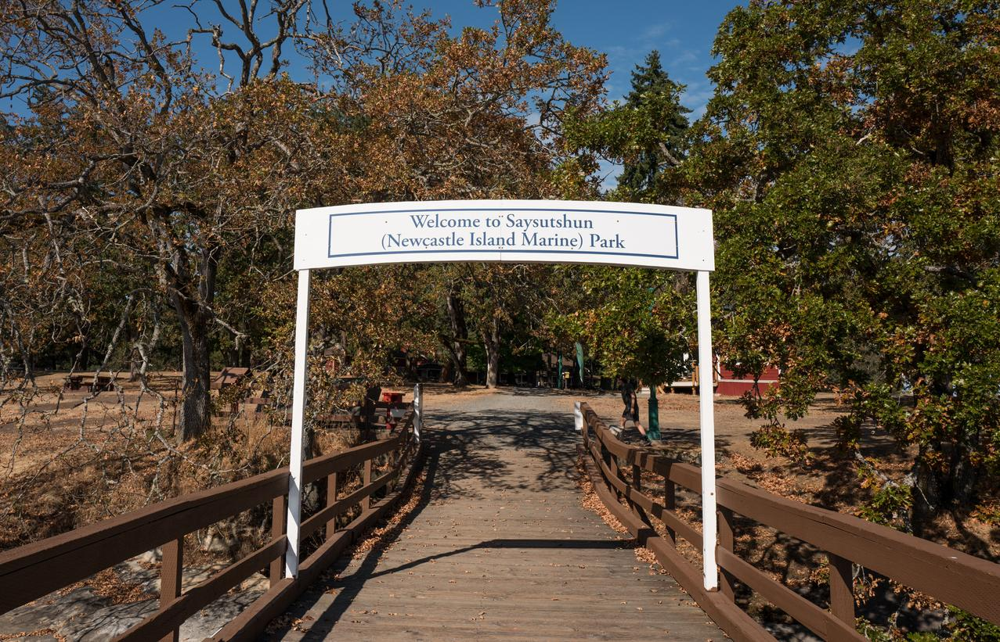

Saysutshun (Newcastle Island Marine Provincial Park)
Snuneymuxw Cultural Experience: Visitors can explore the island's deep Indigenous roots through interpretive signage or by booking cultural tours. The island remains a place of spiritual and historical significance to the Snuneymuxw people.
Trail Network: The island features an extensive 22-kilometer trail system. The 6-kilometer perimeter trail is particularly popular, offering consistent views of the Salish Sea, the Coastal Mountains, and Nanaimo's waterfront.